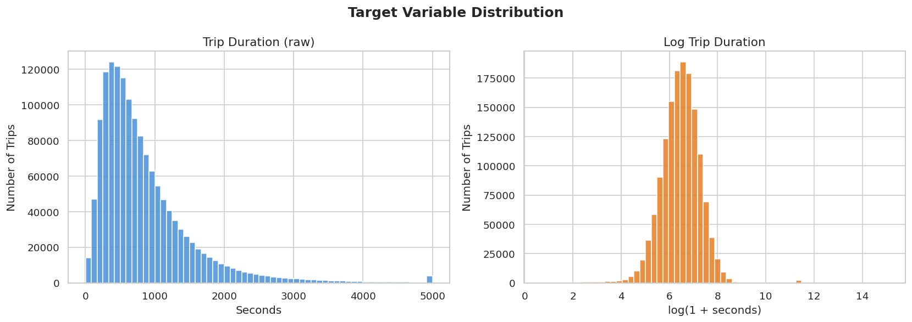
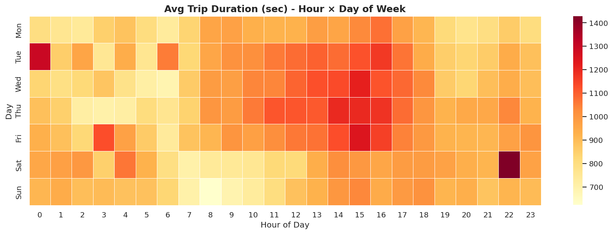
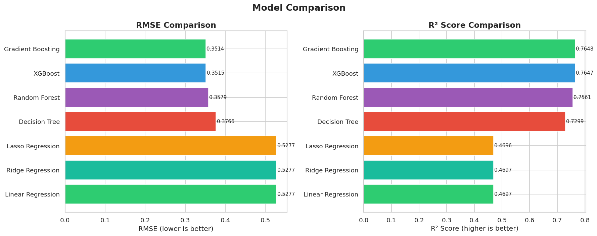
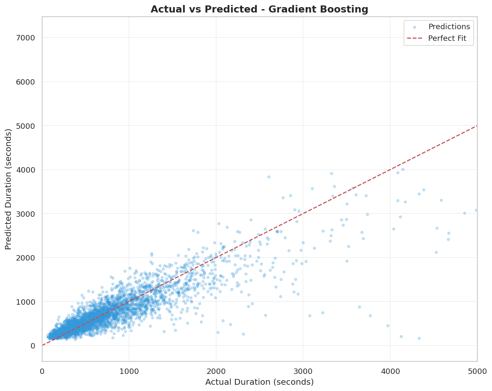
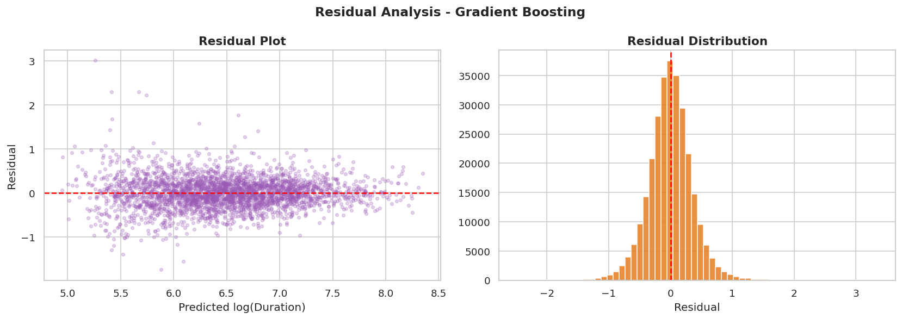
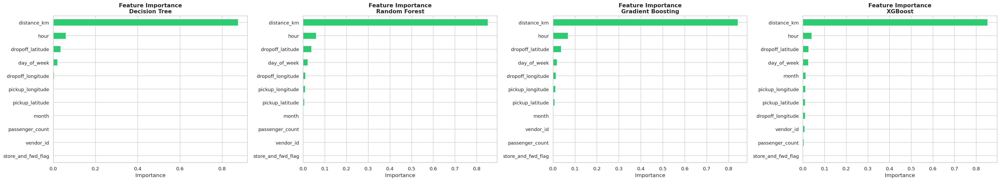
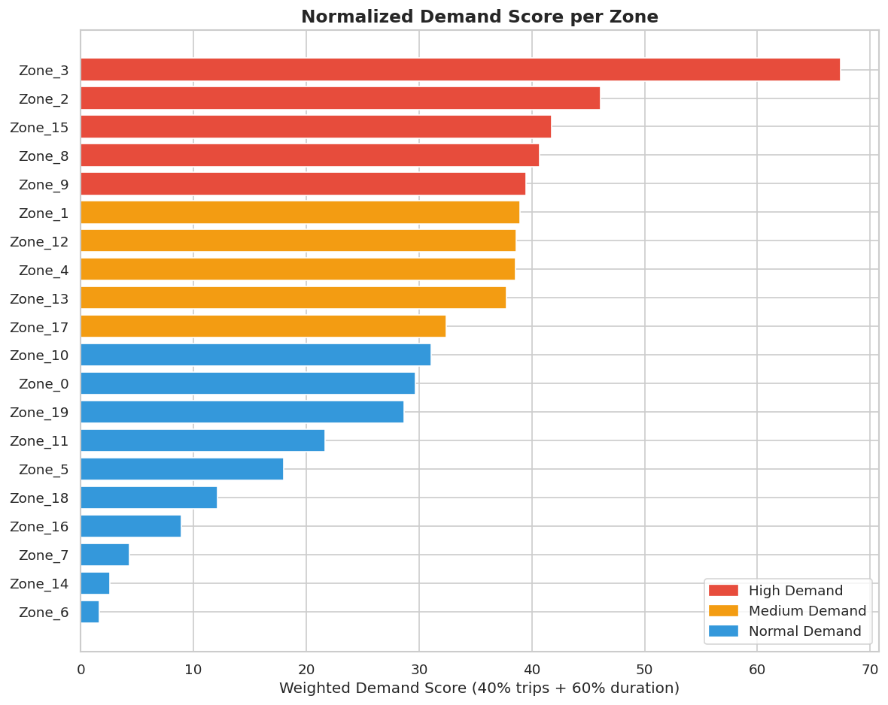
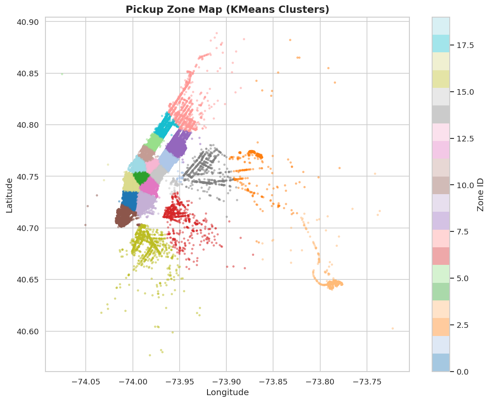
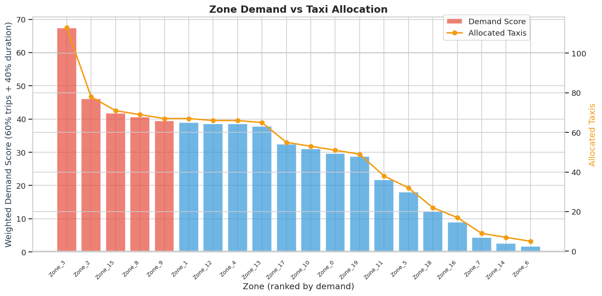

Taxi Demand Prediction
& Dispatch Planning
A comparative study of 7 regression models trained on real NYC taxi data to predict trip duration - a key indicator of taxi demand - and derive actionable zone-level dispatch planning insights.
Project Details
Problem Statement
Taxi operators face a classic resource allocation problem: too many idle cabs waste fuel and driver time, while too few cabs create wait times and lost revenue. By accurately predicting how long each trip will take, dispatchers can estimate fleet capacity, anticipate demand surges by time and zone, and route drivers proactively. This project trains and compares seven regression algorithms on historical NYC taxi data to find the best trip-duration predictor.
Inputs (Features)
Outputs
Project Flow
Dataset
NYC Taxi Trip Duration - Kaggle
Real trip records from New York City taxis collected in 2016. The dataset covers millions of trips with precise pickup/dropoff timestamps and GPS coordinates.
Raw columns: id, vendor_id, pickup_datetime, dropoff_datetime, passenger_count, pickup_longitude, pickup_latitude, dropoff_longitude, dropoff_latitude, store_and_fwd_flag, trip_duration
Engineered columns: hour, day_of_week, month, distance_km (Haversine), binary store_and_fwd_flag
Target:
log1p(trip_duration) - log-transformed to reduce skewness
Models
All models share the same 80/20 train–test split. Linear models receive StandardScaler-normalized features; tree-based models use raw features.
Baseline model. Fits a hyperplane by minimizing least-squares error.
Scaled inputsLinear regression with L2 regularization (α=1). Reduces overfitting by penalizing large coefficients.
Scaled inputsApplies L1 penalty (α=0.001), driving some coefficients to zero - built-in feature selection.
Scaled inputsSplits data recursively on feature thresholds. Max depth=10 to control overfitting.
Raw inputs100 decision trees averaged. Reduces variance via bagging; robust to noise.
Raw inputs100 trees built sequentially, each correcting the previous. Strong baseline ensemble.
Raw inputsRegularised gradient boosting with column subsampling. Often faster and more accurate than sklearn GB.
Raw inputsModel Results
Metrics on the 20% held-out test set. Time_s = wall-clock training time in seconds.
Analysis Plots
Generated by running 01_EDA_and_Modeling.ipynb.








Dispatch Planning
How It Works
After predicting trip durations, the test set predictions are grouped into 20 geographic zones using KMeans clustering on pickup coordinates. The zone with the most predicted trips gets the highest taxi allocation. A fleet of 500 taxis is distributed proportionally with a guaranteed minimum of 3 per zone.



Key Insights
-
Distance dominates. The Haversine distance feature (
distance_km) is consistently the highest-importance predictor across tree-based models - longer trips take proportionally more time. -
Time of day matters. The
hourfeature captures rush-hour congestion. Trips at 8–9 AM and 5–7 PM take significantly longer than off-peak trips for the same distance. - Tree models outperform linear models. Trip duration has non-linear interactions (e.g., distance × hour for rush-hour effects) that linear regression cannot capture without manual polynomial features.
-
Log-transforming the target helps. Raw trip duration is heavily right-skewed.
Predicting
log1p(duration)gives all models - especially linear ones - a much more Gaussian target to fit. - Dispatch planning application. Predicted durations help estimate when a taxi will become available again. A dispatcher can pre-assign the next trip based on remaining estimated time, reducing idle time fleet-wide.